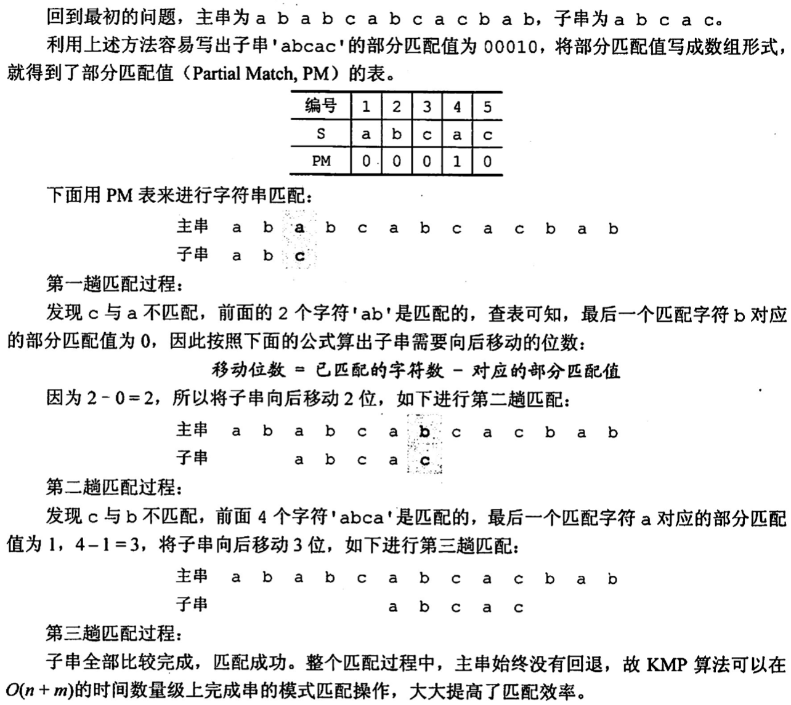
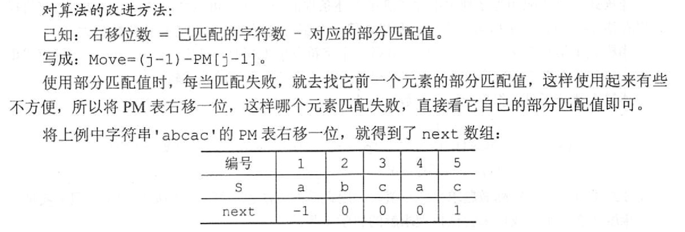

2022.09.13
int Index1(SString S,SString T){ /** * 朴素模式匹配算法1（用于展示） * * 返回匹配位置，匹配失败返回0 */
int i=1; SString Sub; while(i<=S.length - T.length +1){ SubString(Sub,S,i,T.length); PrintNSpace(i-1); StrPrint(Sub); // test if(StrCompare(Sub,T)!=0){ i++; printf(" --- x\n"); // test } else{ printf(" --- √\n"); // test return i; } } return 0;}
int Index2(SString S,SString T){ /** * 朴素模式匹配算法2 * * 返回匹配位置，匹配失败返回0 */ int i=1,j=1; while(i<=S.length && j<=T.length){ if(S.ch[i]==T.ch[j]){ i++;j++; //同时后移 }else{ i=i-j+2; // i从下一位重新计算 j=1; // j也回到开头 } } if(j>T.length) // 匹配成功 return i-T.length; else // 匹配失败 return 0;}计算部分匹配值：从前1个到前n个，分别计算前缀集合和后缀集合最长的相等元素长度。
比如char str[] ="ababa"：
| 前n个字符 | 前缀 | 后缀 | 最长相等长度 |
|---|---|---|---|
| a | {} | {} | 0 |
| ab | {a} | {b} | 0 |
| aba | {a,ab} | {ba,a} | 1 |
| abab | {a,ab,aba} | {bab,ab,b} | 2 |
| ababa | {a,ab,aba,abab} | {baba,aba,ba,a} | 3 |
部分匹配值：00123
移动位数 = 已匹配位数 - 部分匹配值

改进算法——Next数组

int Index3(SString S,SString T){ /** * KMP算法（演示版） * * 返回匹配位置，匹配失败返回0 */ // 计算next数组 int next[T.length]; SString temp1; SString temp2; for(int i=1;i<T.length+1;i++){ if(i==1){ next[i]=0; continue; }else if(i==2){ next[i]=1; continue; } for(int j=1;j<i;j++){ SubString(temp1,T,1,j); // 前缀 SubString(temp2,T,i-j,j); // 后缀 if(StrCompare(temp1,temp2)==0){ next[i]=j; break; }else{ next[i]=1; } } } for(int i=1;i<T.length+1;i++){ printf("%d ",next[i]); } printf("\n"); // 模式匹配 int i=1,j=1,count=1,temp=0; StrPrintln(T); while(i<=S.length && j<=T.length){ //printf("%d(%d) %d(%d) %d\n",i,S.length,j,T.length,count); count++; if(S.ch[i]==T.ch[j]){ //printf("√--%d:%c %d:%c\n",i,S.ch[i],j,T.ch[j]); i++;j++; //同时后移 }else{ //printf("x--%d:%c %d:%c\n",i,S.ch[i],j,T.ch[j]); temp=j; // for test j=next[j]; if(j==0){ i++;j=1; } //printf("-->%d:%c %d:%c\n",i,S.ch[i],j,T.ch[j]); PrintNSpace(i-1); StrPrint(T); printf(" next[%d]:%d\n",temp,next[temp]); } } if(j>T.length) // 匹配成功 return i-T.length; else // 匹配失败 return 0;}
int Index4(SString S,SString T){ /** * KMP算法（演示版） * * 返回匹配位置，匹配失败返回0 */ // 计算next数组 int next[T.length]; SString temp1; SString temp2; for(int i=1;i<T.length+1;i++){ if(i==1){ next[i]=0; continue; }else if(i==2){ next[i]=1; continue; } for(int j=1;j<i;j++){ SubString(temp1,T,1,j); // 前缀 SubString(temp2,T,i-j,j); // 后缀 if(StrCompare(temp1,temp2)==0){ next[i]=j; break; }else{ next[i]=1; } } } // 模式匹配 int i=1,j=1,count=1; while(i<=S.length && j<=T.length){ count++; if(S.ch[i]==T.ch[j]){ i++;j++; //同时后移 }else{ j=next[j]; if(j==0){ i++;j=1; } } } if(j>T.length) // 匹配成功 return i-T.length; else // 匹配失败 return 0;}【2015 统考真题】已知宇符串S为’abaab[a]abacacaabaabcc"，模式串t为'abaab[c]".采用KMP 算法进行匹配，第一次出现“失配”（S[i]≠t[j]）时，i=j=5，則下次开始匹配时，i和j的值分别是（）。 A. i=1, j=0 B. i=5, j=0 C. i=5, j=2 D. ¡=6, j=2
【答案】：
| 前n个字符 | 前缀 | 后缀 | 最长相等长度 | NEXT |
|---|---|---|---|---|
| a | {} | {} | 0 | -1 |
| ab | {a} | {b} | 0 | 0 |
| aba | {a,ab} | {ba,a} | 1 | 0 |
| abaa | {a,ab,aba} | {baa, aa,a} | 1 | 1 |
| abaab | {a,ab,aba.abaa} | {baab,aab,ab,b} | 2 | 1 |
| abaaba | {a,ab,aba.abaa,abaab} | {baaba,aaba,aba,ba,a} | 3 | 2 |
主字符串指针不变，子字符串指针退回到next[j] = next[5] = 2，C
【2019 统考真题】设主串I='abaabaabcabaabc'，模式串S'abaabc"，来用 KMP算法进行模式匹配，到匹配成功时为止，在匹配过程中进行的单个字符间的比较次数是(）。 A. 9 B. 10 C. 12 D. 15
【答案】：
[a] [b] [a] [a] [b] [a] abcabaabc，[a]baabc， 6
abaab [a] [a] [b] [c] abaabc，ab[a]abc， 4，B